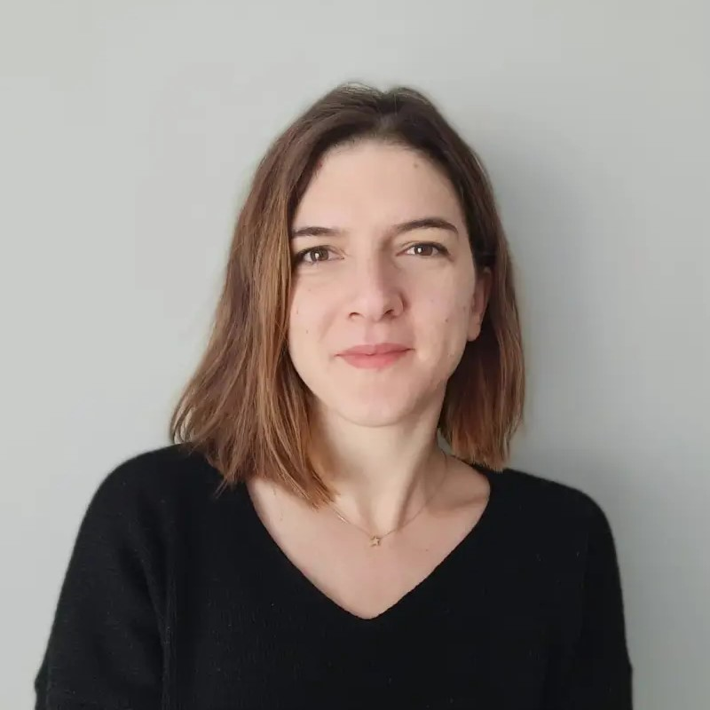

Hakkımda

Psikoloji lisansımı 2013 yılında %100 burs ile okuduğum Yeditepe Üniversitesinden onur derecesiyle mezun olarak tamamladım. Yüksek lisans ve doktora derecemi Orta Doğu Teknik Üniversitesi (ODTÜ) Psikolojik Danışmanlık ve Rehberlik bölümünden aldım. Psikolog olarak olarak özel bir çocuk gelişim merkezinde başladığım kariyerime, özel bir şirkette araştırma asistanı, çeşitli SGK'larda psikolog, süpervizör, eğitimci ve mentor olarak devam ettim. Engelsiz ODTÜ Birimi ve Hollanda`da bulunan Twente Üniversitesi Psikoloji Bölümünde akademik görevlerde yer aldım. 2017 yılından beri 14 yaş ve üzeri bireylere psikolojik danışmanlık hizmeti vermekteyim. Türk Psikolojik Danışmanlık ve Rehberlik Derneği ve Türk Psikologlar Derneği üyesiyim.
Tamamladığım Bazı Mesleki Eğitimler
Duygu Odaklı Birey, Çift ve Aile Terapileri Derneği tarafından verilen, 30 saatlik Duygu Odaklı Çift Terapisi – Temel Beceriler Eğitimini (Externship) ve 24 saatlik Duygu Odaklı Bireysel Terapi Eğitimi. Süpervizyonlar devam etmektedir.
Bilişsel Davranışçı Psikoterapiler Derneği tarafından verilen 50 saatlik Bilişsel Davranışçı Terapi Kuramsal Eğitimini ve 30 saatlik Beceri Kazandırma ve Süpervizyon Eğitimi.
Uluslararası Adler Yaz Okulu ve Enstitüleri Komitesi’ne (International Committee of Adlerian Summer Schools and Institutes; ICASSI) katılarak Bireysel Psikoloji alanında toplam 60 saat ders, çalışma grupları ve seminerleri.
Çağdaş Drama Derneğini tarafından verilen toplam 320 saatlik Yaratıcı Drama Eğitmenliği Programının “Öğretmen Adaylarının Engelliliğe Dair Farkındalığının Yaratıcı Drama Yöntemi ile Geliştirilmesi” isimli bitirme projesi ile tamamladım.
ODTÜ SEM işbirliği ile Prof. Dr. Hürol FIŞILOĞLU tarafından verilen toplam 80 saatlik Aile ve Evlilik Terapisi 1. ve 2. düzey eğitimleri.
Dr. Zeynep ARMAY tarafından verilen 12 saatlik Kanser Psikolojisi, Psikoonkolojiye giriş̧ ve Psikoterapi Uygulamaları eğitimi.